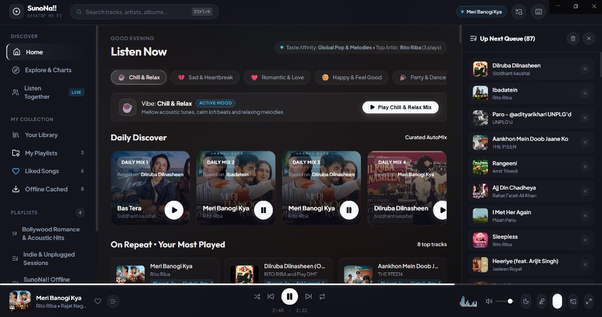

Frameless obsidian window. Full laptop keyboard media keys. Synchronized karaoke lyrics. Embedded local streaming proxy for instant zero-buffering seek.

Click the download link to fetch the self-contained SunoNa-Setup-1.0.5.exe package directly to your machine.
Double-click the setup file. NSIS completes the installation in seconds, generating clean desktop and Start Menu shortcuts.
Launch SunoNa, search any track, like your favorites, and enjoy seamless background playback with zero ads.